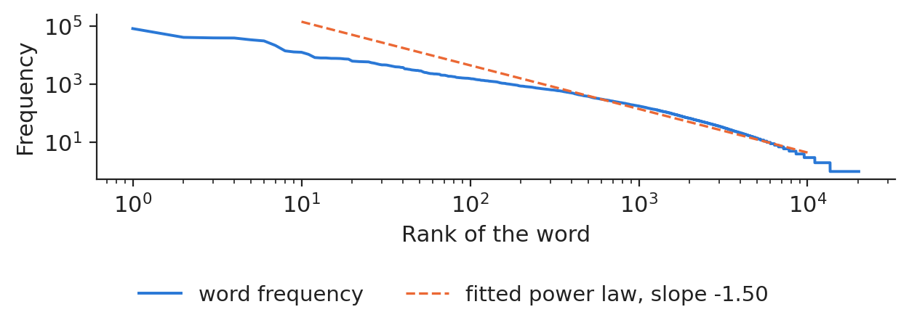
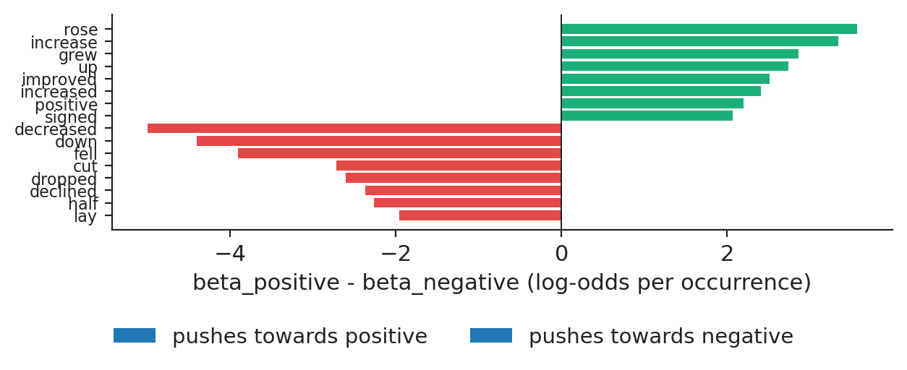
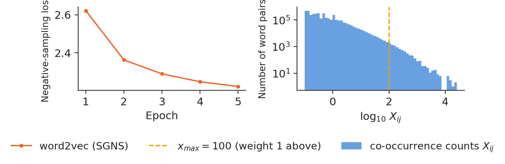
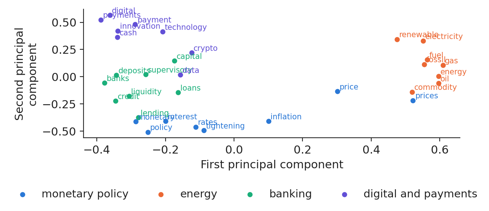
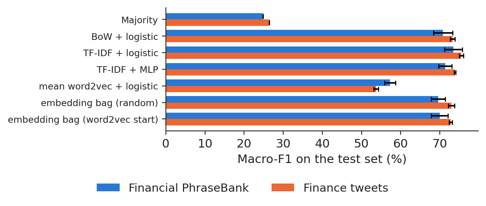
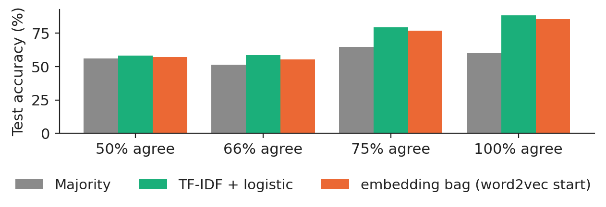
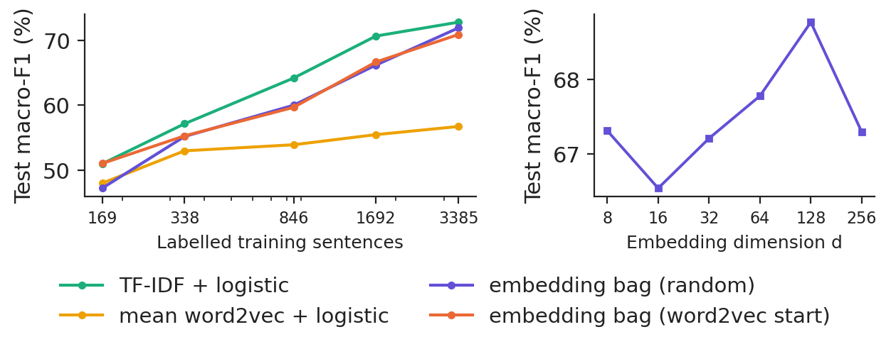
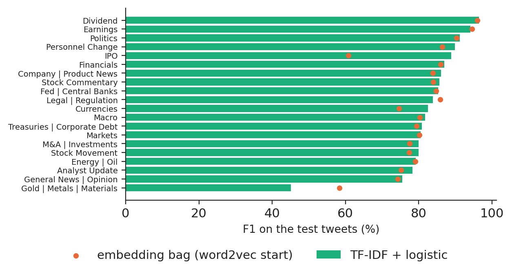

Lecture 6: NLP foundations: text representation and word embeddings
Lecture 6
NLP foundations: text representation and word embeddings
Prof. dr. Daniel Traian PELE
Bucharest University of Economic Studies (ASE), Department of Statistics and Econometrics Romanian Academy, Institute for Economic Forecasting (IPE)
Much of what moves a market is written: company news, tweets, central-bank speeches, analyst reports. Natural language processing (NLP) turns this text into numbers that a model can use. This lecture follows the two main families of representation that came before transformers: sparse counts, the bag of words (BoW) and term frequency–inverse document frequency (TF-IDF), and dense word vectors (embeddings) learned from co-occurrence, word2vec and GloVe.
All representations are built on real financial text: 4,838 sentences of the Financial PhraseBank labelled by finance students, finance tweets labelled by sentiment and by topic, and 400 speeches of the European Central Bank (ECB), on which we train our own embeddings. The classifiers are compared with honest benchmarks and tests, and the result is a lesson in itself: on short financial sentences a linear model on TF-IDF is very hard to beat.
What you will be able to do
Turn financial text into numbers: tokens, vocabulary, bag of words and TF-IDF.
Write the objectives of word2vec and GloVe and train both on a real corpus of central-bank speeches.
Build sentence classifiers from sparse and dense representations, with benchmarks and tests.
Measure financial sentiment and topics on news and tweets, and know when a linear model is enough.
Research from our groupPele, Bolovăneanu, Lin, Ren, Ginavar, Spilak, Andrei, Toma, Lessmann and Härdle (2026) show that large language models (LLM) can forecast value-at-risk (VaR) and expected shortfall (ES), benchmarked against classical risk models with formal backtests (LLM-VaR and LLM-ES).
Text as data
Tokenisation of a sentence
A real sentence of the PhraseBank, labelled positive by the annotators: "Finnish Aktia Group 's operating profit rose to EUR 17.5 mn in the first quarter of 2010 from EUR 8.2 mn in the first quarter of 2009 .". Our tokeniser keeps lower-case words and numbers, turns every number into the token `<num>` and removes links and @-mentions; the sentence becomes 27 tokens. Every choice matters: removing English stop words would delete "up", "down" and "not", which carry sentiment.
Word frequencies and Zipf's law
The ECB speeches from 8 January 2022 to 30 October 2026 contain 1,289,896 tokens and 20,130 distinct words. Frequency falls as a power of rank (Zipf's law), with an estimated slope of −1.498; the ten most frequent words make 25.0% of all tokens, and 32.5% of the distinct words occur only once.

Rank–frequency plot of the words of the ECB speeches, log–log, with the fitted power law.
Source: European Central Bank, speeches dataset. Data: 8 Jan 2022 to 30 Oct 2026, 400 speeches.
A bag of words represents a document by the counts \(c_{ij}\) of each vocabulary word \(j\), ignoring order. TF-IDF reweights the counts so that words frequent in the document but rare in the corpus get a high weight:
where \(n\) is the number of documents and \(n_j\) the number that contain word \(j\). Bigrams add local order ("profit rose" against "profit fell").
The linear model learns a finance sentiment dictionary
A multinomial logistic regression on the bag of words gives one coefficient per word and class. The words that push most towards a positive label are: rose, increase, grew, up, improved; towards a negative label: decreased, down, fell, cut, dropped. General-language dictionaries often misread finance words, which is why the weights should be learned on finance text.

The words with the largest difference between their positive and negative coefficients, logistic regression on PhraseBank.
Source: Financial PhraseBank (Malo et al., 2014). Data: 4,838 sentences of financial news, 5-8 annotators each.
A word embedding is a row \(\mathbf e_w\) of a matrix \(\mathbf E\) of size \(V\times d\); here the vocabulary has 8,539 words and \(d=100\). Similarity is the cosine of two vectors. In our own vectors, cos(inflation, prices) = 0.49 while cos(inflation, climate) = 0.16.
word2vec with negative sampling
The skip-gram model predicts each context word in a window of 5 around the centre word. The full softmax over the vocabulary is too slow, so skip-gram with negative sampling (SGNS) replaces it by logistic regressions that tell the real context word from \(K=5\) noise words drawn in proportion to \(f(w)^{3/4}\):
Trained on the ECB speeches (3,679,754 word pairs per epoch, 5 epochs, 120 seconds on a laptop processor), the loss per pair falls from 2.622 to 2.223.
GloVe
GloVe counts once how often words appear together, \(X_{ij}\), and fits dot products to the logarithms of these counts with weights \(f(X_{ij})=\min\{1,(X_{ij}/x_{\max})^{\alpha}\}\), here \(x_{\max}=100\) and \(\alpha=0.75\). Our co-occurrence table has 3,841,517 non-zero pairs; 99.81% of them are below \(x_{\max}\) and receive a weight below one.

Left: loss of word2vec by epoch. Right: distribution of the co-occurrence counts used by GloVe.
Source: European Central Bank, speeches dataset. Data: 8 Jan 2022 to 30 Oct 2026, 400 speeches.
The nearest words to "inflation" are headline, underlying, revert, hovering, medium for word2vec and expectations, underlying, headline, core, term for GloVe; the two top-five lists share 1.88 words on average over the probe words. Projected on two principal components (principal component analysis, PCA), words about monetary policy, energy, banking and payments form separate regions; the two components keep 31.9% of the variance of these vectors. A static embedding has one vector per word, so "interest" (rate) and "interest" (attention) share one, and words outside the vocabulary (OOV) have none: the ECB vocabulary covers 84.7% of the PhraseBank tokens and 76.4% of the tweet tokens.

Two-dimensional projection of 32 words of four groups in our word2vec space.
Source: European Central Bank, speeches dataset. Data: 8 Jan 2022 to 30 Oct 2026, 400 speeches.
"Neutral" is 59.3% of the PhraseBank, so accuracy rewards a model that always says "neutral". We report the macro-F1, the mean of the F1 scores of the three classes. PhraseBank is split five times at random (70/15/15, stratified); the tweets keep their published validation split as test. Penalties, early stopping and vocabularies are chosen on the validation part only.
The models are: the majority class; BoW and TF-IDF with logistic regression; TF-IDF with a multilayer perceptron (MLP); the mean word2vec vector with logistic regression; and an embedding-bag network that averages word and bigram vectors before a softmax layer, with a random start or with our ECB word2vec vectors as the start.
Results
On PhraseBank, TF-IDF with logistic regression reaches a macro-F1 of 73.49% (standard deviation 2.28 over the splits), the embedding bag with a word2vec start 69.93% and the mean word2vec vector 57.30%; the majority class gives 24.81%. On the tweets, the same models give 75.47%, 72.76% and 53.71%. The paired difference between TF-IDF and the embedding bag over the five PhraseBank splits is +3.55 points (t = 9.88).

Test macro-F1 of the seven models on PhraseBank and on finance tweets (mean and standard deviation).
Source: Financial PhraseBank (Malo et al., 2014); Twitter financial news (Hugging Face, zeroshot). Data: PhraseBank: 5 random 70/15/15 splits; tweets: published validation split as test, 3 seeds.
TF-IDF with logistic regression is right on 88.4% of the sentences on which all annotators agreed and on 58.1% of those with only 50% agreement. Label noise caps every model; before buying a bigger model, check how much your own analysts agree.

Test accuracy by the share of annotators who agreed on the label.
Source: Financial PhraseBank (Malo et al., 2014). Data: test sentences of 5 random splits, by share of annotators that agree.
With only 169 labelled sentences, TF-IDF reaches 51.0%, the mean word2vec vector 48.0% and the embedding bag 47.2% from a random start and 51.0% from word2vec; with all 3,385 sentences the numbers are 72.8%, 56.7%, 71.9% and 70.9%. Most errors move a negative or positive sentence to neutral: the recall is 65.9% for negative sentences and 69.5% for positive ones.

Left: test macro-F1 against the number of labelled sentences. Right: size of the embedding vectors.
Source: Financial PhraseBank (Malo et al., 2014). Data: left: 3 random splits; right: embedding bag (random start), split 1, 3 seeds.
The topic data have 20 classes. TF-IDF with logistic regression reaches a macro-F1 of 82.62% and an accuracy of 84.48% on the 4,117 test tweets, against 20.69% for the most frequent topic; the embedding bag gives 80.45%. The easiest topic is Dividend (F1 96.4%), the hardest Gold | Metals | Materials (F1 45.2%).

F1 by topic on the test tweets: TF-IDF with logistic regression and the embedding bag.
In practice: start every text project with TF-IDF and logistic regression; move to embeddings or transformers only when the gain is shown on your own data.
Research from our group
Pele, Bolovăneanu, Lin, Ren, Ginavar, Spilak, Andrei, Toma, Lessmann and Härdle (2026) show that large language models (LLM) can forecast value-at-risk (VaR) and expected shortfall (ES), benchmarked against classical risk models with formal backtests (LLM-VaR and LLM-ES). In BitMood, Conda, Găman, Bâg, Mazurencu-Marinescu-Pele, Pele and Härdle (2026) classify 120,000 Facebook posts from 2015–2023 with FinBERT into compound sentiment scores; sentiment predicts Bitcoin trading volume, sentiment-based strategies outperform buy-and-hold, and topic modelling tracks the themes of the discussion.
Section summary
Text becomes numbers through counts (BoW, TF-IDF) or dense vectors learned from co-occurrence (word2vec, GloVe). On real financial sentences TF-IDF with logistic regression is a strong benchmark, and pre-trained vectors help most when labels are few. Lecture 7 adds attention and contextual vectors, compared fairly with these baselines.
Videos: the intuition behind the mathematics (in English)
bidirectional encoder representations from transformers
BoW
bag of words
CBOW
continuous bag of words (word2vec variant)
CPU
central processing unit
ECB
European Central Bank
ES
expected shortfall
ESG
environmental, social and governance
FinBERT
BERT model adapted to financial text
IPE
Institute for Economic Forecasting, Romanian Academy
LLM
large language model
MLP
multilayer perceptron
NLP
natural language processing
OOV
out of vocabulary
PCA
principal component analysis
PMI
pointwise mutual information
SGNS
skip-gram with negative sampling
SVD
singular value decomposition
TF-IDF
term frequency–inverse document frequency
VaR
value-at-risk
References
Bishop, C. M. & Bishop, H. (2024). Deep Learning: Foundations and Concepts, ch. 12. Springer. doi:10.1007/978-3-031-45468-4
Bojanowski, P., Grave, E., Joulin, A. & Mikolov, T. (2017). Enriching word vectors with subword information. TACL, 5, 135–146. doi:10.1162/tacl_a_00051
Conda, A. I., Găman, Ș., Bâg, R. C., Mazurencu-Marinescu-Pele, M., Pele, D. T. & Härdle, W. K. (2026). BitMood: AI analysis of Bitcoin trends via Facebook emotions. Digital Finance, 8(3), 42. doi:10.1007/s42521-026-00205-3
Firth, J. R. (1957). A synopsis of linguistic theory 1930–1955. In Studies in Linguistic Analysis, 1–32. Blackwell.
Joulin, A., Grave, E., Bojanowski, P. & Mikolov, T. (2017). Bag of tricks for efficient text classification. EACL, 427–431. doi:10.18653/v1/E17-2068
Levy, O. & Goldberg, Y. (2014). Neural word embedding as implicit matrix factorization. NIPS, 27, 2177–2185. papers.nips.cc
Loughran, T. & McDonald, B. (2011). When is a liability not a liability? Textual analysis, dictionaries, and 10-Ks. Journal of Finance, 66(1), 35–65. doi:10.1111/j.1540-6261.2010.01625.x
Malo, P., Sinha, A., Korhonen, P., Wallenius, J. & Takala, P. (2014). Good debt or bad debt: Detecting semantic orientations in economic texts. JASIST, 65(4), 782–796. doi:10.1002/asi.23062
Mikolov, T., Sutskever, I., Chen, K., Corrado, G. & Dean, J. (2013). Distributed representations of words and phrases and their compositionality. NIPS, 26, 3111–3119. arXiv:1310.4546
Pele, D. T., Bolovăneanu, V., Lin, M.-B., Ren, R., Ginavar, A. T., Spilak, B., Andrei, A.-V., Toma, F.-M., Lessmann, S. & Härdle, W. K. (2026). In the beginning was the Word: LLM-VaR and LLM-ES. Expert Systems with Applications, 295, 128676. doi:10.1016/j.eswa.2025.128676
Pennington, J., Socher, R. & Manning, C. D. (2014). GloVe: Global vectors for word representation. EMNLP, 1532–1543. doi:10.3115/v1/D14-1162
Salton, G. & Buckley, C. (1988). Term-weighting approaches in automatic text retrieval. Information Processing & Management, 24(5), 513–523. doi:10.1016/0306-4573(88)90021-0
Zipf, G. K. (1949). Human Behavior and the Principle of Least Effort. Addison-Wesley.
Text written for the web version of the lecture; numbers, charts and sources come from the slides and their Quantlets.